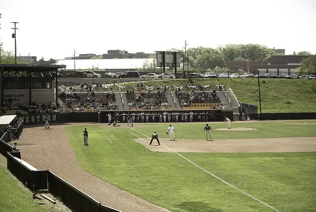
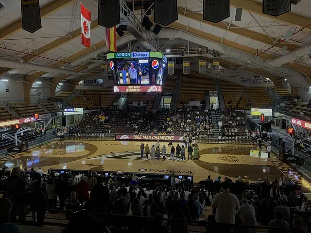
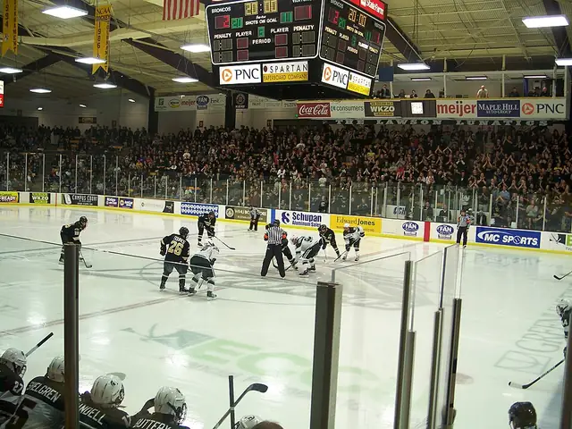
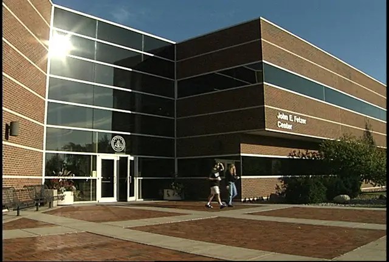

So That All May Learn
Western Michigan University
Hyames Field, WMU's baseball park on East Campus, hosted the very first College World Series in 1947 and again in 1948.
- 8Buildings
- 4Traditions
- 1905Oldest · Heritage Hall (East Hall)
- 2007Newest · Richmond Center for Visual Arts
Campus map and Look Around
Tap a numbered pin to see that building from the street with Apple Look Around.
Planning the visit
- Fly intoKalamazoo/Battle Creek International Airport (AZO)
Kalamazoo/Battle Creek International Airport, southeast of downtown Kalamazoo, is the nearest airport with airline service.
- Getting aroundWalking / Metro buses
Kalamazoo's Metro buses serve Western Michigan University as well as the city and its suburbs.
- Colors and teams
The school colors are brown and gold, and the teams are the Broncos.
- Where to stayFind hotels near Western Michigan University on Expedia Compare on Booking.com Vacation rentals on Vrbo
Stamped! may earn a commission when you book through these links.
8 buildings to stamp
-
Photo: Fbthpg, CC0, via Wikimedia Commons Heritage Hall (East Hall)
Oakland Dr, Kalamazoo, MI 49008
East Hall, the first building of the Western State Normal School, opened on Prospect Hill in 1905. After its wings came down in 2013, the original core reopened in 2015 as Heritage Hall, home of the WMU Alumni Center.
- Built
- 1905
- Today
- Alumni Center
-
Miller Auditorium
1341 Theatre Dr, Kalamazoo, MI 49008
Opened in 1968 and named for WMU's third president, James W. Miller, this 3,497-seat hall is the fifth-largest auditorium in Michigan. Touring Broadway shows and the Kalamazoo Symphony Orchestra perform here.
- Built
- 1968
- Today
- Performing Arts Venue
-
Photo: C4jones2, CC BY-SA 3.0, via Wikimedia Commons Richmond Center for Visual Arts
Western Michigan University, Kalamazoo, MI 49008
Opened in 2007, this arts center houses part of the Frostic School of Art. Its first floor holds three galleries for rotating shows, the university art collection and student work.
- Built
- 2007
- Today
- Galleries and Art School
-
Photo: Whippdog, CC BY-SA 4.0, via Wikimedia Commons Waldo Stadium
Stadium Dr, Kalamazoo, MI 49008
Broncos football has played on this East Campus site since 1914, and the full stadium opened in 1939. It is named for Dwight B. Waldo, the school's first president, and seats 30,200.
- Built
- 1939
- Today
- Football Stadium
-

Photo: Joel Dinda, CC BY 2.0, via Wikimedia Commons Hyames Field
Stadium Dr, Kalamazoo, MI 49008
Built in 1939 alongside Waldo Stadium, this baseball park hosted the first College World Series in 1947 and the second in 1948. It is home to Broncos baseball.
- Built
- 1939
- Today
- Baseball Stadium
-

Photo: BenjaminSmithChef, CC BY-SA 4.0, via Wikimedia Commons University Arena (Read Fieldhouse)
Western Michigan University, Kalamazoo, MI 49008
Read Fieldhouse opened in 1957 and is named for longtime basketball coach Buck Read. A 1994 renovation turned the floor 90 degrees and created the 5,421-seat University Arena.
- Built
- 1957
- Today
- Basketball and Volleyball Arena
-

Photo: Brian Rawson-Ketchum from Springfield, MI, US, CC BY-SA 2.0, via Wikimedia Commons Lawson Arena
1903 W Michigan Ave, Kalamazoo, MI 49008
This horseshoe-shaped, 3,667-seat ice arena opened in 1974 for Broncos hockey. Its old-style design and loud fans make it one of the toughest rinks for visiting teams.
- Built
- 1974
- Today
- Ice Arena
-

Photo: Auxiliary Enterprises, Western Michigan University, Public domain, via Wikimedia Commons John E. Fetzer Center
Western Michigan University, Kalamazoo, MI 49008
Opened in 1983, this conference center is named for radio pioneer and Detroit Tigers owner John Fetzer. Its lounge has an exhibit on his life.
- Built
- 1983
- Today
- Conference Center


.jpg){kind=link}

.jpg){kind=link}

4 traditions to check off
Stamped! keeps these as a checklist, so you can tick each one off on the visit.
The Bronco Statue
A 1,800-pound bronze bronco by sculptor Veryl Goodnight has stood on campus since 1997. It was first part of her larger work "The Day the Wall Came Down." Snap a photo with it.
Homecoming at Waldo Stadium
Each October WMU paints the town brown and gold for Homecoming, ending with Broncos football at Waldo Stadium. Join the crowd in the stands.
National Champions at Lawson Arena
The Broncos won their first men's ice hockey national championship in 2025. Catch a game at Lawson Arena and look for the championship banner.
Up Prospect Hill to Heritage Hall
WMU began on Prospect Hill, where East Hall opened in 1905 and a trolley once carried people up the slope. Walk up to Heritage Hall, the restored East Hall, and the North Hall portico beside it.
History
Founded 1903
From Wikipedia
Bliss for the training of teachers. It was renamed Western Michigan University in 1957.
The app's quiz · 10 questions
How well do you know Western Michigan University?
The same quiz as in Stamped!: name the landmark, its architect, its style or the year it was finished. Every round is different.
Know Western Michigan University well?
Students and alumni know the traditions best. Suggest one we're missing, a building worth a stamp, a fix, or your own photo of a building. Every suggestion is checked before it goes into the app.
More U.S. schools
- California Institute of Technology
- Carnegie Mellon University
- Central Michigan University
- Colorado State University
- Cranbrook Academy of Art
- Eastern Michigan University
- Emory University
- Florida Southern College
- Georgetown University
- Grand Valley State University
- Illinois Institute of Technology
- Johns Hopkins University
- Massachusetts Institute of Technology
- Michigan Technological University
- New York University
- Oakland University
- Rice University
- Tulane University
- University of California, San Diego
- University of Chicago
- Washington University in St. Louis
- Wayne State University
Stamp all 8 on your visit.
Tour Western Michigan University in 3D before you go, add it to a college road trip and earn a passport stamp at every building. Free on iPhone, iPad and Mac.
Download on theApp StoreEnjoying the guides? Leave a tip to help keep new cities coming.